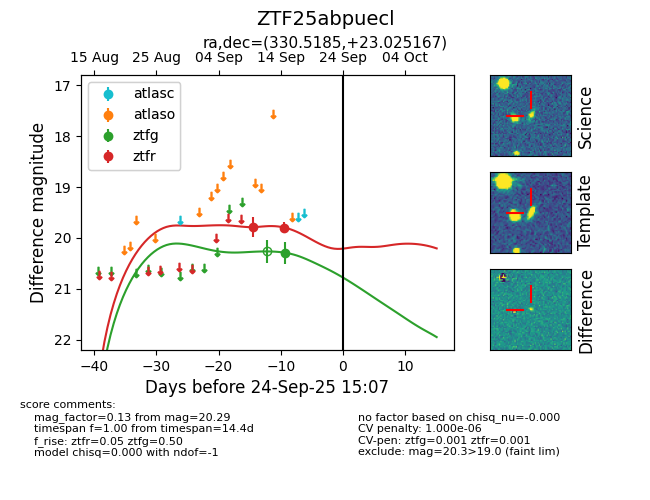
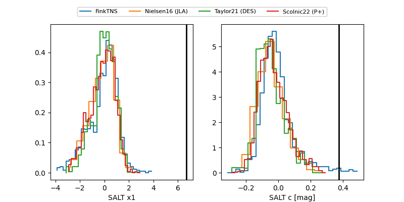

FINK: ZTF25abpuecl
Lasair: ZTF25abpuecl
ALeRCE: ZTF25abpuecl
ZTF25abpuecl (ztf,fink)
equatorial (ra, dec) = (330.5185,+23.02517)
galactic (l, b) = (79.6533,-25.28208)


last ztfg=20.29, ztfr=19.80
1 ztfg, 2 ztfr detections